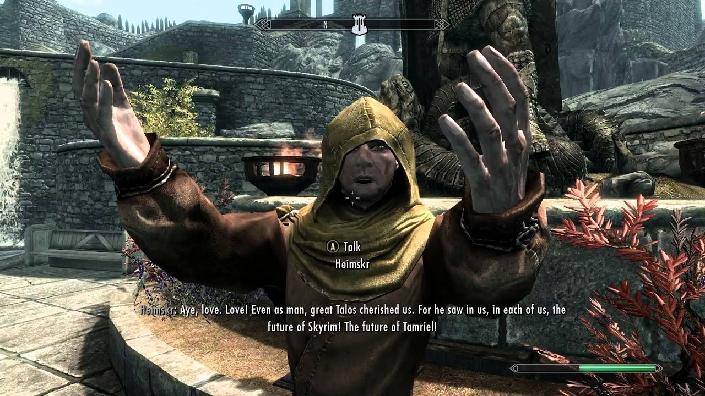

И започваме класацията с един от любимите ни Nordove, човекът на когото почти не мога да му произнеса името и който не изпитва страх да проповядва забранената религия в Тамриел! Единственият и неповторим Heimskr! Може да го срещнете във Wind District-та, пред статуята на Талос проповядвайки в неговото име. Отличава се от останалите НПС-та със своето гръмогласие.
Имам чувството, че единствената причина да вика толкова силно е защото, иска и девете бога да го чуят от съседните измерения. Няма играч, който да не е натискал F5 докато минава покрай него. Аз лично обичам да си пробвам силата на новите уръжия и магий върху него.
Както предполагате, той симпатизира на Стормклоковете, но не мисля, че те могат да кажат същото за него ;).
Ето малко аудио за да може и вие да се насладите на медните думи на този северняк!
"Trust in me, Whiterun! Trust in Heimskr! For I am the chosen of Talos! I alone have been anointed by the Ninth to spread his holy word!" ―Heimskr